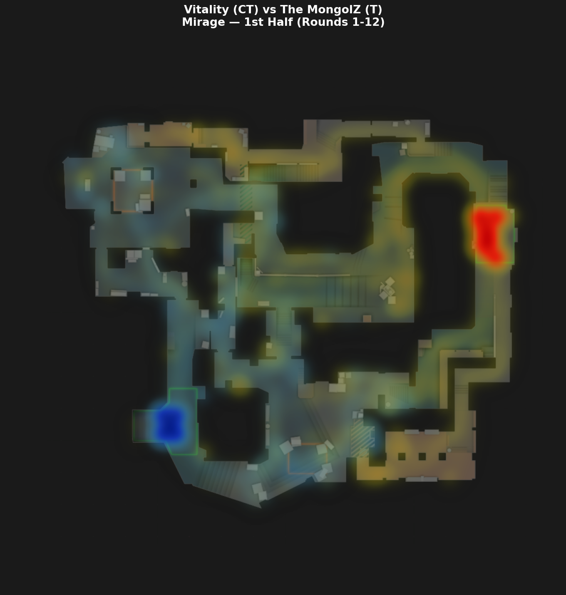
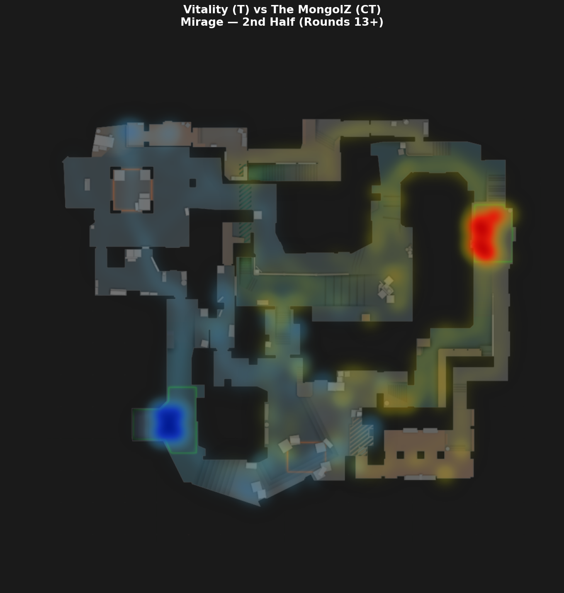

Tactical Pace Differences
In CS, map control and early utility exchanges often determine mid-round execution quality.
Esports is becoming increasingly mainstream and popular, growing from a niche competitive scene into a global form of entertainment followed by players, fans, and organizations around the world.
Our team is especially interested in data related to this field, so we selected two major esports titles, Counter-Strike and Dota 2, and surveyed players worldwide to show how broadly esports popularity is distributed today.
This first part uses two world-map views to highlight the current international reach of these games. In the second part of our visualization, we move from global popularity to match-specific analysis and focus on detailed Counter-Strike gameplay data.
Explore regional esports data across Counter-Strike and DOTA 2.
In CS, map control and early utility exchanges often determine mid-round execution quality.
Teams from different regions tend to show stable preferences in default setups and retake routes.
In DOTA 2, the first ten minutes often shape mid-to-late map control and vision initiative.
Key cooldown timings and high-ground vision are core variables behind teamfight win rates.
Vitality vs The MongolZ — BLAST.tv Austin Major 2025 Grand Final
In Counter-Strike, winning a round is often about owning the right space at the right time. Before a site execute or retake ever happens, both teams are constantly fighting for control of key lanes, chokepoints, and rotation routes.
This visualization turns every frame of player movement into a live territorial map. As players advance, reposition, or die, the boundary between CT and T influence shifts in real time across the radar.
Why it matters: It helps players and coaches see when a team truly has map presence, when a push is unsupported, and how much pressure each lineup creates before the decisive duel even begins.
How does territorial control shift between the two teams as each round progresses?

Territory is computed using Voronoi nearest-player distance:
each point on the map belongs to whichever team's closest alive player is nearer.
Blue = CT territory
Red = T territory
If T pushes forward, the area behind them remains T-controlled
(since no CT player is closer). Boundaries shift as players move and die.
Controls: Space = play/pause, Arrow keys = step frames.
A single round can look chaotic, but repeated over an entire series, movement patterns become strategy. Heatmaps reveal where players spend their time, which paths they trust, and which zones they consistently avoid.
By combining all rounds from both sides, this view exposes each team's spatial habits: defensive anchor zones, preferred attack routes, and the parts of the map where rotations naturally converge.
Why it matters: Coaches can use these hotspots to compare default structures, identify overused lanes, and prepare counter-play for the positions an opponent returns to most often.
Player positioning patterns for each team on CT and T sides — Vitality vs The MongolZ, BLAST.tv Austin Major 2025.


At the highest level of Counter-Strike, raw aim isn't enough. Utility (grenades, smokes, flashes) is the tactical foundation that enables teams to take map control, execute site hits, or deny enemy advances.
By mapping out every piece of utility thrown by Team Vitality, we can visualize their "Utility Lanes"—the specific trajectories and lineups they rely on to execute their game plan.
Why it matters: This visualization reveals a team's tactical playbook. A coach can study these lanes to find gaps in their own utility usage or to prepare anti-strats by anticipating exactly where and when the opponent will deploy their grenades.
Vitality grenade trajectories across BLAST.tv Austin Major 2025 — throw origins to landing zones.

Every kill in Counter-Strike tells a story of positioning, timing, and crossfire. By connecting the exact location of the attacker to where their victim fell, we create a "Vector Field" of lethality.
This visualization plots those fatal shots as glowing tracer lines, categorized by weapon type. Dense webs of lines highlight the most dangerous angles on the map and the preferred engagement distances of different players.
Why it matters: Understanding these vectors helps players identify where they are most vulnerable to being peaked, and allows coaches to optimize their team's crossfire setups and post-plant positioning based on empirical match data.
Vitality gun kills across BLAST.tv Austin Major 2025 — attacker positions to victim death locations.
Enter current team equipment and money, then choose Eco / Half Buy / Full Buy to get recommended loadouts. Based on CS2 economy and equipment rules.
Choose a strategy
=[Your conclusion and takeaways go here.]